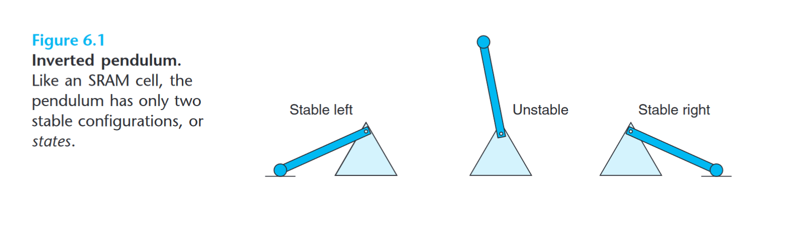

Internal memory
Also known as primary memory; refers to memory that stores small amounts of data that can be accessed quickly while the computer is running. When the processor needs an instruction or data, it searches memory in this order:
- LI cache
- L2 cache
- L3 cache (if it exists)
- RAM Delay is greater with each level of memory it must search. If the instruction or data is not found in primary memory, then it must search in secondary storage (e.g. hard disk or optical disc), which has a much slower speed.
Random access memory (RAM)
| Transistors per bit | Relative access time | Persistent? | Sensitive? | Relative cost | Applications | |
|---|---|---|---|---|---|---|
| SRAM | 6 | 1 | Yes | No | 1000 | Cache |
| DRAM | 10 | No | Yes | 1 | Main memory, frame buffers |
Also called main memory, consists of memory chips that can read from and written to by the processor. RAM is volatile, meaning it loses its contents when power is removed. Static RAM (SRAM) is faster and significantly more expensive than dynamic RAM (DRAM).
Static RAM (SRAM)
Static RAM keeps data in the memory as long as power is supplied to the system. SRAM stores each bit in a bistable memory cell, i.e., it can stay indefinitely in either of two different voltage configurations, or states. Any other state will be unstable—starting from there, the circuit will quickly move toward one of the stable states. 
Such a memory cell is analogous to an inverted pendulum. The pendulum is stable when it is tilted either all the way to the left or all the way to the right. From any other position, the pendulum will fall to one side or the other. This bistable nature allows SRAM memory cells to retain its value indefinitely, as long as it is kept powered. Even when a disturbance, such as electrical noise, perturbs the voltages, the circuit will return to the stable value when the disturbance is removed.
Registers
Registers are small, high-speed storage locations that temporarily hold data and instructions inside the processor. They are the fastest form of memory and provide the processor with quick access to data, such as when:
- Storing the location from where the instruction was fetched,
- Storing an instruction while the control unit decodes it,
- Storing data while the ALU calculates it,
- Storing the results of a calculation.
Cache
Cache is a form of high-speed storage that stores frequently used instructions and data and has larger capacity than registers. There are three levels of cache:
- L1 cache is built directly on the processor chip, has a very small capacity
- L2 cache is slightly slower than LI cache but has a larger capacity
- Advanced transfer cache (ATC) is a type of L2 cache built directly on the processor chip making it perform faster
- L3 cache is a cache on the motherboard that is separate from the L2 cache; exists only on computers that uses ATC L2 cache
Dynamic RAM (DRAM)
Dynamic RAM stores each bit as a charge on a capacitor. Unlike SRAM, a DRAM memory cell is very sensitive to any disturbance. When the capacitor voltage is disturbed, it will never recover. Exposure to light rays will cause the capacitor voltages to change. In fact, the sensors in digital cameras and camcorders are essentially arrays of DRAM cells.
DRAM cell to lose its charge within a time period of around 10 to 100 milliseconds. Fortunately, for computers operating with clock cycle times measured in nanoseconds, this retention time is quite long. The memory system must periodically refresh every bit of memory by reading it out and then rewriting it.
Memory modules
RAM chips usually reside on a memory module, which is a small circuit board. Memory slots on the motherboard hold memory modules.
Single inline memory module (SIMM)
Single inline memory modules (SIMM) have pins on opposite sides of the circuit board that connect together to form a single set of contacts
Dual inline memory module (DIMM)
Dual inline memory modules (DIMM) have pins on opposite sides of the circuit board that do not connect and thus form two sets of contacts
Read only memory (ROM)
As opposed to RAM, ROM is nonvolatile, meaning its contents are not lost when power is removed. ROM chips, called firmware, contain permanently written data or instructions, e.g., a computer or a mobile device’s start-instructions
Programmable ROM (PROM)
Programmable ROM (PROM) is is a form of digital memory where the contents can be changed once after manufacture of the device. In other words, it is programmable by user using an external programming device only once (hence one-time programmable; OTP), after which the data becomes permanent and non-volatile.
Erasable PROM (EPROM)
EPROM is a form of PROM, i.e., its contents can be changed by the user using an external programming device. However, once programmed, an EPROM can be erased by exposing it to strong ultraviolet (UV) light source.
Electrically erasable PROM (EEPROM)
EEPROM is a form of PROM, i.e., its contents can be changed by the user using an external programming device. However, EEPROM allows individual bytes to be erased and reprogrammed in-circuit (i.e., without the need to remove from the circuit board as with UV-erasable EPROM). It can clear entire blocks with a single operation.
Flash storage is an application of EEPROM technology.
External memory
A storage device (external memory or secondary storage) is the hardware that records or retrieves items to/from storage media.
Storage capacity
| Storage term | Approx. no. of bytes | Exact no. of bytes |
|---|---|---|
| Kilobyte (KB) | 1 thousand | |
| Megabyte (MB) | 1 million | |
| Gigabyte (GB) | 1 billion | |
| Terabyte (TB) | 1 trillion | |
| Petabyte (PB) | 1 quadrillion | |
| Exabyte (EB) | 1 quintillion | |
| Zettabyte (ZB) | 1 sextillion | |
| Yottabyte (YB) | 1 septillion |
Capacity is the number of bytes that a storage medium can hold
Storage access time
Storage access time measures the amount of time it takes a storage device to locate an item on a storage medium. On the other hand, transfer rate refers to the speed at which data and instructions are transferred to/from a storage device. Transfer rates are measured in KBps (kilobytes per second), MBps (megabytes per second), or GBps (gigabytes per second).
Hard Disk
A hard disk, also called a hard disk drive (HDD), is a storage device that contains one or more flexible, circular platters that use magnetic particles to store data and instructions.
The storage capacity of hard disks varies and is determined by three factors: platter, composition of magnetic coating, and density
Platter
The platter is made of aluminum, glass, or ceramic and has a thin coating of alloy material that allows data and instructions to be recorded magnetically on its surface.
Composition of magnetic coating
The composition of the magnetic coating on the platter is crucial for storage.
- Longitudinal recording aligns the magnetic particles horizontally around the surface of the disk.
- Perpendicular recording aligns the magnetic particles vertically, making much greater storage capacity possible.
Density
Density refers to the number of bits in an area on a storage medium.
Formatting
Formatting is the process of dividing the disk into tracks and sectors so that the OS can locate data on the disk easily. While the computer is running, the platters in the hard disk rotate at a high rate of speed. This spinning, which usually is 5400 to 15000 revolutions per minute (rpm), allows nearly instant access to all tracks and sectors on the platters. The platters continue to spin until power is removed, or slow down after a period of time to save power.
Track
A track is a narrow recording band that forms a full circle on the surface of the disk. The disk’s storage locations consist of wedge-shaped sections, which break the tracks into smaller arcs called sectors.
Sector
A sector can typically store 512 bytes of data.
Optical Discs
An optical disc is a type of storage medium that consists of a flat, round, portable disc made of metal, plastic, and lacquer that is written and read by a laser.
Flash Memory Storage
Flash memory is a type of nonvolatile memory that can be erased electronically and rewritten. Flash memory chips are a type of solid-state media, consisting entirely of electronic components such as integrated circuits and containing no moving parts. The lack of moving parts makes flash memory more durable and shock-resistant than other types of media, such as magnetic disks or optical discs.
USB Flash Drives
USB flash drives, sometimes called a thumb drive or pen drive, are flash memory storage devices that plug into a USB port on a computer or mobile device.
Solid-State Drive
A solid-state drive (SSD) is a flash memory storage device that has its own processor to manage its storage. SSDs have several advantages over traditional (magnetic) hard disks: higher storage capacities, faster access time (up to 80 times faster), faster transfer rates, quieter operation, more durable, lighter weight, less power consumption (leading to longer battery life), less heat generation, and longer life. The disadvantages of SSDs are that data recovery in the event of failure can be more difficult and cost is higher per gigabyte.
Memory Cards
A memory card is a removable flash memory storage device that is inserted into a slot in a computer, mobile device, or card reader/writer.
Cloud Storage
Cloud storage is an Internet service that provides storage to computers and mobile device users. It is available for home and business users, with various degrees of storage services available. Cloud storage fee arrangements vary, depending on the user’s storage requirements.